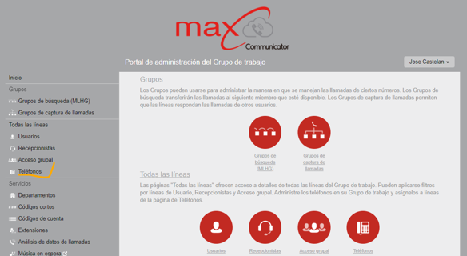
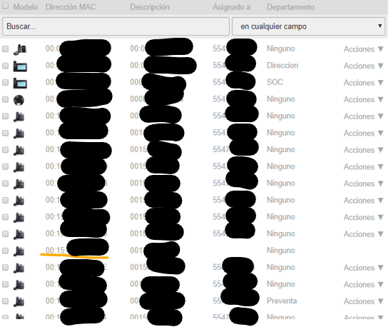
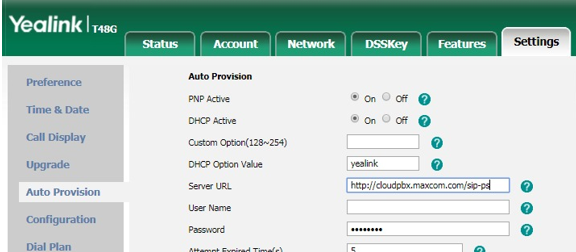
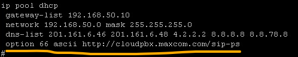
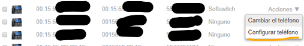
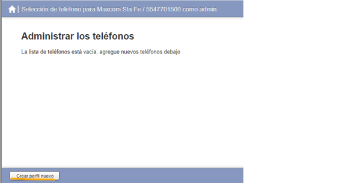
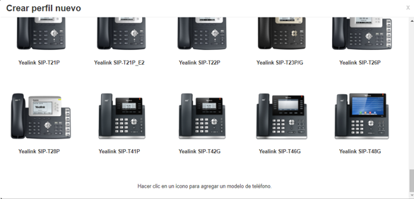
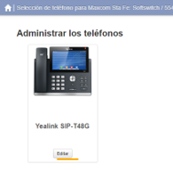
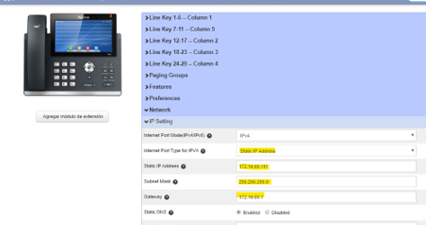

Uso de teléfonos VoIP
Los teléfonos IP pueden convivir con esta solución y pueden ser configurados por ti mismo. Revisa esta sección para más detalles
En el portal de administrador, se debe ir a la sección de Teléfonos.

Debes buscar la MAC del equipo a asociar (si no aparece, acercate a tu ejecutivo postventa para requerir habilitar esa MAC).

En la pantalla que aparece debe hacer lo siguiente.
- Seleccionar la casilla “¿Está asignado a la línea?”
- El cuadro que viene al frente debe capturar el DID a asignarle
- En el cuadro de “Autenticar hasta” debe poner la fecha y hora máxima en que se permitirá el autoaprovisionamiento. No se recomienda dejar pasar más de un día. De hecho, se recomienda dar click en “Permitir la autenticación durante una hora a partir de este momento” para que se rellene automáticamente la fecha y hora con los datos de una hora en el futuro.
- Se da click en “Aplicar”
Durante el tiempo permitido en la asignación de cuenta, se debe perdir la carga de la configuración. Para ello, se recomienda siempre reiniciar el teléfono de fábrica.
Hay dos formas para aprovisionar un teléfono IP después de haber asignado la cuenta
- Ingresando a la GUI del teléfono y capturar en la sección de autoaprovisionamiento la URL https://cloudpbx.maxcom.com/sip-ps o http://cloudpbx.maxcom.com. Después de eso, el teléfono se debe reiniciar.
- Conectando tu teléfono a una red con DHCP, la cual debe tener la opción 66 configurada con el ascii https://cloudpbx.maxcom.com/sip-ps o http://cloudpbx.maxcom.com/sip-ps. Esto permitirá que el teléfono tone configuración desde que se conecta a la red.


El teléfono se reiniciará dos veces y finalmente estará listo para su operación.
Se deben tener en cuenta 2 pasos antes de asociar la MAC con el teléfono físico.
- Se debe cargar la IP fija manual al teléfono para que tenga conectividad.
- En el portal de administrador se debe ir a la sección de "Teléfonos". Después buscar el teléfono deseado y seleccionar la opción de "Configurar teléfono". Esto abrirá una nueva ventana, a la que debe dar click en "Crear nuevo perfil". Después se debe elegir el modelo exacto del teléfono deseado. Después de ello, se selecciona el equipo telefónico y en la sección de "IP Settings" se carga la IP que debe llevar.





Pregunta a tu ejecutivo postventa si es posible usar otro modelo de los que vienen enlistados. De no ser posible y es mandatorio utilizarlo, toma en cuenta que el funcionamiento puede ser errático.
Yealink T19
Firmware T19P-31.71.202.51 y T19P_E2-53.80.202.1
Yealink T23
Firmware T23P-44.80.202.1
Grandstream GXP1615
Firmware 1.0.4.55
Grandstream GXP2135
Firmware 1.0.11.3
Grandstream GXP2170
Firmware 1.0.11.3
Grandstream GXV3275
Firmware 1.0.3.186
Yealink CP960
Firmware 73.80.0.50
Grandstream GAC2500
Firmware 1.0.3.5